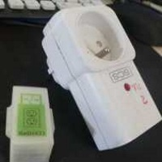
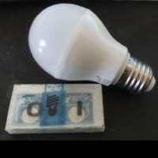

Learn how to connect arduino with the onboard led
Got an arduino but no components ? You can still control the onboard led and control it on a webpage!
This is also a good place to start if you want to learn how to easily convert any arduino code to build your own libre objects.
Use leds for notifications or decorations

We can use leds to be notify of something (for ex:email) or just as decorative ornements.
This object use 2 or 5 leds from a led strip and can remember specific animation/color thanks
to the memory of the arduino (eeprom)
Control cheap home appliances

Learn how to use a radio receiver/transmitter to control appliances (outlets/bulb) using 433/315Mhz.
You can even make a simple radio network thanks to radiohead protocols.
Control milight bulbs using nrf24l01+

Milight bulbs are cheap radio controlled bulbs, you can use the official WI-FI gateway
to control it but you can also directly control it with an nrf24l01+.
This object can also be used to create a mysensors serial gateway!
Use a DHT11 Temperature/Humidity sensor
This object can get the temperature/humidity of a room. You can also add a photoresistor
to get a rough estimation of the brightness.
You can use it to show live sensor information on a webpage or save it to build graph.
You can also interact with your computer:
The humidity sensor can detect someone blowing on it, The temperature sensor can sense if you hold it, and the light sensor
Annoying but fun! Build alarm or play music from DOS game!
This buzzer won't make beautiful sound, but it can be used to generate powerful sound to create an alert and even play monophonic music using standard midi partition!
If you use multiples buzzers you can even make polyphonic music.